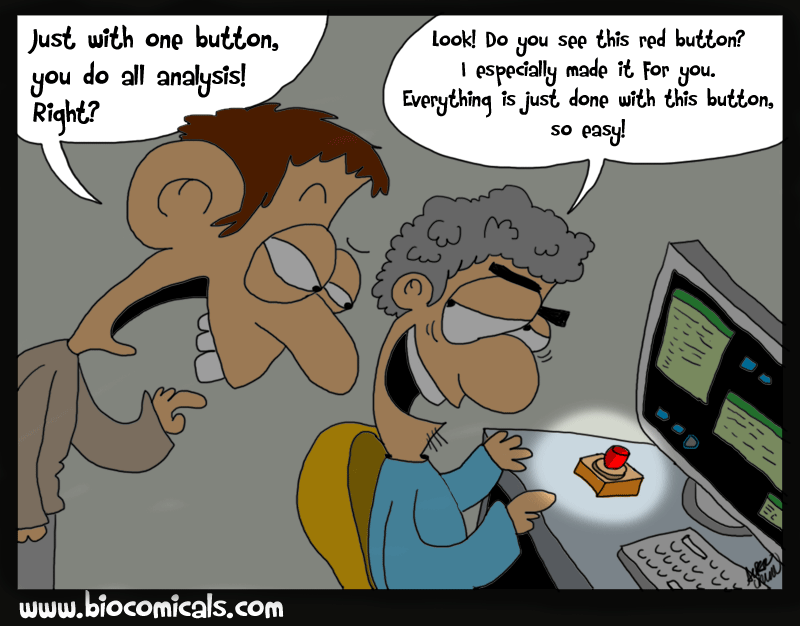
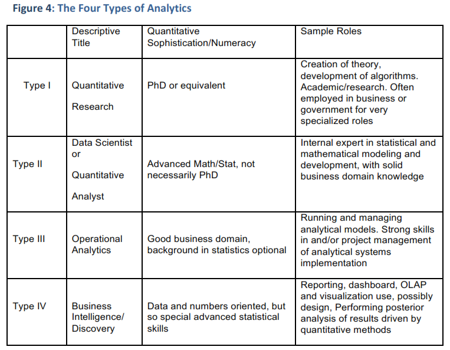

Analytics is the discovery and communication of meaningful patterns in data.
Learn how to gather real-time and relevant information about how your software is being used and to use that to make development decisions based on actual data.

http://thedailywtf.com/Articles/The_Big_Red_Button.aspx
This is an amusing read, it start out with "Take-Your-Child-To-Work Day never made much sense to me." - in the context of a BRB I bet you can image where it goes :)
... analytics relies on the simultaneous application of statistics, computer programming and operations research to quantify performance. Analytics often favors data visualization to communicate insight.

Looking specifically to App Analytics, what options exist already and how to use them from Clarion...
Use whichever works best for you, as long as it meets the requirements for Piwik!
[DllExport("DoTest", CallingConvention = System.Runtime.InteropServices.CallingConvention.StdCall)]
public static void DoTest(string text)
{
Console.Write(text);
}
ConsoleSupport Class - very handy for testing class libraries!
Main PROCEDURE()
Console ConsoleSupport
CODE
IF Console.Init()
Halt()
END
Console.WriteLine('*** Clarion console app! ***')
CWAnalytics Class:
INCLUDE('LoadLibClass.inc'),ONCE
INCLUDE('CStringClass.inc'),ONCE
INCLUDE('DotNetSupport.inc'),ONCE
CWAnalytics Class(DotNetSupport),Type,etc...
_LoadLib &LoadLibClass
GetNetProperty PROCEDURE(STRING pClassName, etc...
GetFileVersionInfo PROCEDURE(STRING pFileName, etc...
Init PROCEDURE(STRING pPiwikUrl, etc...
LogEnvironment PROCEDURE(STRING pProperty, etc...
PowershellInvoke PROCEDURE(STRING pScript, etc...
SetUserAgent PROCEDURE(STRING pUserAgent, etc...
SimplePageView PROCEDURE(STRING pUrl, etc...
SetCustomVariable PROCEDURE(LONG pID, etc...
END
ConsoleSupport classGetNetProperty !!PowershellInvoke !!